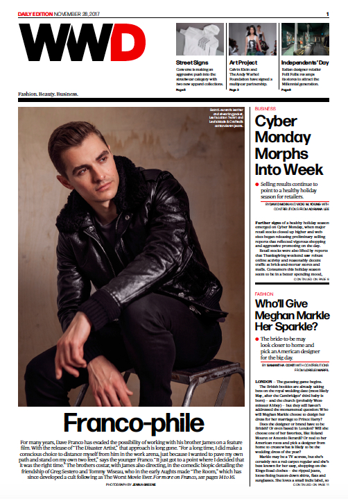

Women's Wear Daily
Selected profiles:
All WWD articles
Dave Franco on "The Disaster Artist"
Taylor Kitsch, Inside the Mind of David Koresh
Stacy Martin Enters the World of Jean-Luc Godard
Lakeith Stanfield, Acting the Part
Freida Pinto on "Guerrilla"
Aaron Taylor-Johnson on "Nocturnal Animals"
Director Kelly Reichardt on "Certain Women"
Director Ti West on "In a Valley on Violence"